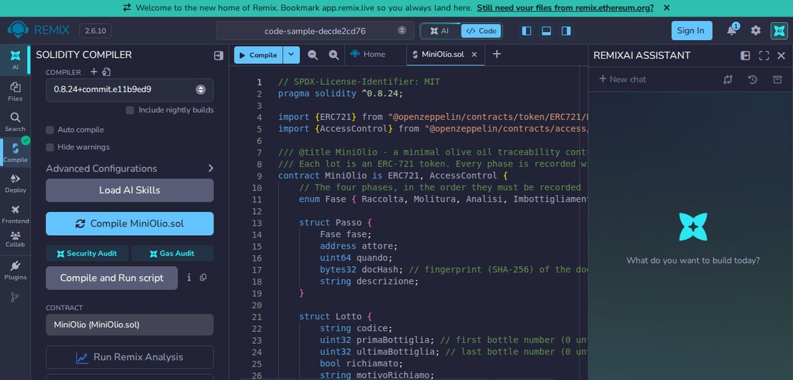
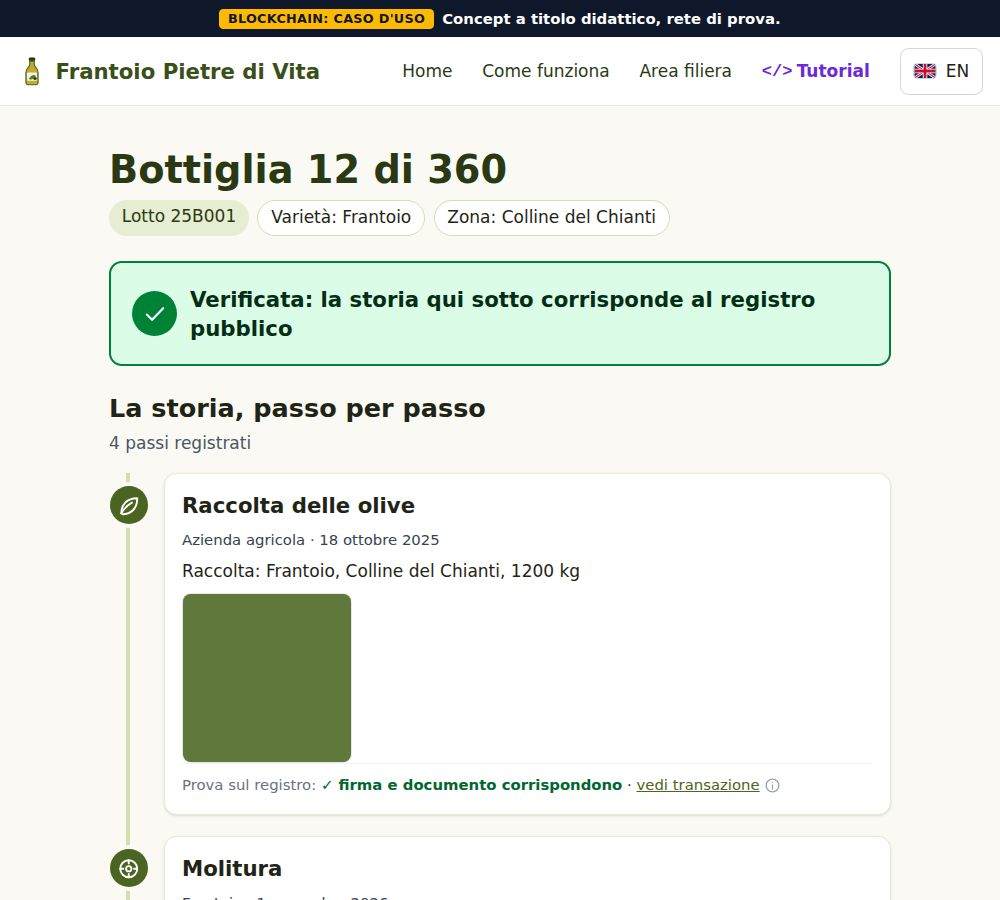
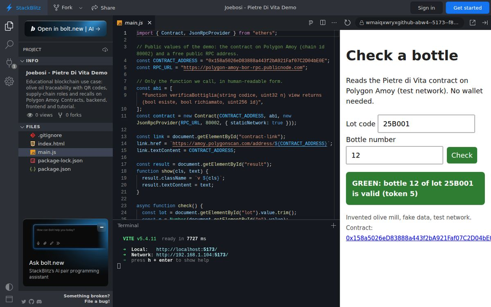

Costruisci la tua versione base di Pietre di Vita
Questa guida è stata eseguita davvero da cima a fondo in una cartella pulita, copiando e incollando esattamente i comandi e il codice che vedi qui. Gli output sono quelli reali di quella prova. In fondo trovi cosa è stato verificato e cosa no.
0. Che cosa serve
Un computer con un terminale e Node.js 22 (il programma che esegue JavaScript, scaricabile da nodejs.org). Controlla la versione:
node -vv22.23.1Ti serviranno tre finestre di terminale: una per la rete di prova locale, una per il server, una per i comandi. Le parole nuove: Hardhat è l'ambiente che compila e prova i contratti; OpenZeppelin è una raccolta di contratti già scritti e controllati; ERC-721 è lo standard dei token unici; SHA-256 è la funzione che calcola l'impronta di un file; RPC (Remote Procedure Call, chiamata a procedura remota) è l'indirizzo con cui un programma parla con la catena; QR è il codice a quadretti che si inquadra col telefono.
Il tuo sistema operativo
I comandi usano un terminale in stile Unix: Linux e macOS lo hanno già, su Windows usa WSL (Ubuntu) oppure Git Bash. Su macOS al posto di sha256sum file scrivi shasum -a 256 file. I comandi che parlano con la catena richiedono la connessione a internet.
1. La cartella e le librerie
Crea la cartella e inizializza il progetto Node:
mkdir pietre-base
cd pietre-base
npm init -yWrote to /home/you/pietre-base/package.json:
{
"name": "pietre-base",
"version": "1.0.0",
"description": "",
"main": "index.js",
"scripts": {
"test": "echo \"Error: no test specified\" && exit 1"
},
"keywords": [],
"author": "",
"license": "ISC"
}Installa Hardhat 2 con il suo pacchetto di strumenti, poi OpenZeppelin 5 e le librerie del server (express per il server web, qrcode per il QR, dotenv per leggere il file .env, ethers per parlare con la catena):
npm install --save-dev hardhat@2 @nomicfoundation/hardhat-toolbox@5npm install @openzeppelin/contracts@5 express@4 qrcode dotenv ethers@6Il comando può stampare avvisi di sicurezza sulle dipendenze di Hardhat: sono normali in questo ambiente didattico e l'installazione prosegue fino in fondo. Ora un file .gitignore (così non finiscono mai in un archivio git i file segreti o pesanti) e le sottocartelle:
printf 'node_modules\n.env\ncache\nartifacts\n' > .gitignore
mkdir contracts test scripts serverCrea il file di configurazione di Hardhat. La rete Amoy viene aggiunta solo se compili il file .env:
hardhat.config.js
require("@nomicfoundation/hardhat-toolbox");
require("dotenv").config({ quiet: true });
// Local node address. If port 8545 is busy on your computer, set RPC_URL in .env
const networks = {
localhost: { url: process.env.RPC_URL || "http://127.0.0.1:8545" },
};
// The Amoy network is added only if you filled in .env
if (process.env.AMOY_RPC_URL && process.env.DEPLOYER_PRIVATE_KEY) {
networks.amoy = {
url: process.env.AMOY_RPC_URL,
chainId: 80002,
accounts: [process.env.DEPLOYER_PRIVATE_KEY],
};
}
module.exports = {
solidity: {
version: "0.8.24",
settings: { optimizer: { enabled: true, runs: 200 }, evmVersion: "cancun" },
},
networks,
};
2. Il contratto ridotto
Un contratto intelligente è un programma che vive sulla catena: le regole sono dentro e valgono per tutti. Questo contratto fa sei cose: crea un lotto (un token ERC-721), assegna i ruoli (con AccessControl di OpenZeppelin: chi può raccogliere, chi analizza, chi imbottiglia), registra i passi con l'impronta del documento, imbottiglia indicando l'intervallo dei numeri di bottiglia, richiama il lotto e risponde alla domanda pubblica "questa bottiglia è valida?". I nomi delle funzioni sono in italiano come nella versione completa; commenti e messaggi sono in inglese.
contracts/MiniOlio.sol
// SPDX-License-Identifier: MIT
pragma solidity ^0.8.24;
import {ERC721} from "@openzeppelin/contracts/token/ERC721/ERC721.sol";
import {AccessControl} from "@openzeppelin/contracts/access/AccessControl.sol";
/// @title MiniOlio - a minimal olive oil traceability contract (teaching example, invented mill)
/// Each lot is an ERC-721 token. Every phase is recorded with the hash of a document.
contract MiniOlio is ERC721, AccessControl {
// The four phases, in the order they must be recorded
enum Fase { Raccolta, Molitura, Analisi, Imbottigliamento }
struct Passo {
Fase fase;
address attore;
uint64 quando;
bytes32 docHash; // fingerprint (SHA-256) of the document kept off-chain
string descrizione;
}
struct Lotto {
string codice;
uint32 primaBottiglia; // first bottle number (0 until bottled)
uint32 ultimaBottiglia; // last bottle number (0 until bottled)
bool richiamato;
string motivoRichiamo;
}
bytes32 public constant PRODUTTORE_ROLE = keccak256("PRODUTTORE_ROLE");
bytes32 public constant LABORATORIO_ROLE = keccak256("LABORATORIO_ROLE");
bytes32 public constant IMBOTTIGLIATORE_ROLE = keccak256("IMBOTTIGLIATORE_ROLE");
uint256 private _ultimoId;
mapping(uint256 => Lotto) private _lotti;
mapping(uint256 => Passo[]) private _passi;
mapping(bytes32 => uint256) private _idDaCodice; // keccak256(code) => token id
event LottoCreato(uint256 indexed id, string codice);
event PassoAggiunto(uint256 indexed id, Fase fase, address indexed attore, bytes32 docHash);
event Imbottigliato(uint256 indexed id, uint32 primaBottiglia, uint32 ultimaBottiglia);
event Richiamato(uint256 indexed id, string motivo);
constructor() ERC721("Pietre di Vita - lotto", "PDV") {
// For this demo the deployer gets every role. In real life each role goes to a different person.
_grantRole(DEFAULT_ADMIN_ROLE, msg.sender);
_grantRole(PRODUTTORE_ROLE, msg.sender);
_grantRole(LABORATORIO_ROLE, msg.sender);
_grantRole(IMBOTTIGLIATORE_ROLE, msg.sender);
}
/// Creates a lot: mints one token to the producer who calls.
function creaLotto(string calldata codice) external onlyRole(PRODUTTORE_ROLE) returns (uint256 id) {
require(bytes(codice).length > 0, "empty code");
require(_idDaCodice[keccak256(bytes(codice))] == 0, "code already used");
id = ++_ultimoId;
_lotti[id].codice = codice;
_idDaCodice[keccak256(bytes(codice))] = id;
_safeMint(msg.sender, id);
emit LottoCreato(id, codice);
}
/// Records Raccolta, Molitura or Analisi. Phases must follow the order, no skipping.
function aggiungiPasso(uint256 id, Fase fase, string calldata descrizione, bytes32 docHash) external {
require(fase != Fase.Imbottigliamento, "use imbottiglia");
_controllaRuolo(fase);
_controllaOrdine(id, fase);
_registra(id, fase, descrizione, docHash);
}
/// Records the bottling and the range of bottle numbers (first..last, both included).
function imbottiglia(uint256 id, uint32 prima, uint32 ultima, bytes32 docHash)
external
onlyRole(IMBOTTIGLIATORE_ROLE)
{
require(prima >= 1 && ultima >= prima, "bad range");
_controllaOrdine(id, Fase.Imbottigliamento);
_lotti[id].primaBottiglia = prima;
_lotti[id].ultimaBottiglia = ultima;
_registra(id, Fase.Imbottigliamento, "Bottling", docHash);
emit Imbottigliato(id, prima, ultima);
}
/// Marks the lot as recalled. Anyone who then checks a bottle of the lot sees it.
function richiama(uint256 id, string calldata motivo) external onlyRole(PRODUTTORE_ROLE) {
_esiste(id);
require(!_lotti[id].richiamato, "already recalled");
_lotti[id].richiamato = true;
_lotti[id].motivoRichiamo = motivo;
emit Richiamato(id, motivo);
}
// ---------- reads (free, no wallet needed) ----------
function lotto(uint256 id) external view returns (Lotto memory) {
_esiste(id);
return _lotti[id];
}
function passi(uint256 id) external view returns (Passo[] memory) {
_esiste(id);
return _passi[id];
}
function idDaCodice(string calldata codice) external view returns (uint256) {
return _idDaCodice[keccak256(bytes(codice))];
}
/// Public check of one bottle. valida is true only if the lot exists, is fully bottled,
/// the bottle number is inside the range and the lot is not recalled.
function verificaBottiglia(string calldata codice, uint32 n)
external
view
returns (bool valida, bool richiamato, uint256 id)
{
id = _idDaCodice[keccak256(bytes(codice))];
if (id == 0) return (false, false, 0);
Lotto storage l = _lotti[id];
bool inIntervallo = l.primaBottiglia != 0 && n >= l.primaBottiglia && n <= l.ultimaBottiglia;
richiamato = l.richiamato;
valida = inIntervallo && !richiamato;
}
// ---------- internals ----------
function _esiste(uint256 id) private view {
require(id != 0 && id <= _ultimoId, "lot not found");
}
function _controllaRuolo(Fase fase) private view {
if (fase == Fase.Analisi) _checkRole(LABORATORIO_ROLE);
else _checkRole(PRODUTTORE_ROLE);
}
function _controllaOrdine(uint256 id, Fase fase) private view {
_esiste(id);
require(uint8(fase) == _passi[id].length, "phase out of order");
}
function _registra(uint256 id, Fase fase, string memory descrizione, bytes32 docHash) private {
_passi[id].push(Passo(fase, msg.sender, uint64(block.timestamp), docHash, descrizione));
emit PassoAggiunto(id, fase, msg.sender, docHash);
}
function supportsInterface(bytes4 interfaceId)
public
view
override(ERC721, AccessControl)
returns (bool)
{
return super.supportsInterface(interfaceId);
}
}
Tre punti da notare. Le fasi devono seguire l'ordine (phase out of order altrimenti). Un passo accetta solo chi ha il ruolo giusto. Sulla catena finisce solo l'impronta (docHash) del documento: il documento resta fuori.
Compila:
npx hardhat compileCompiled 18 Solidity files successfully (evm target: cancun).Provalo subito
Compila e prova il contratto di questo passo direttamente dal browser: si apre nell'editor online Remix, pronto da compilare. Hardhat, i test e il server dei passi successivi girano sul tuo computer con i comandi di questa pagina.
Gratuito, funziona nel browser, solo dati pubblici.
Remix è in inglese. Se mentre la pagina si apre il terminale mostra un messaggio rosso "Could not resolve package version", premi ancora Compile: la libreria OpenZeppelin viene scaricata e compare la spunta verde.
Cosa dovresti vedere
In Remix: scheda Solidity compiler, compilatore 0.8.24, pulsante Compile: compare la spunta verde. Con Hardhat sul tuo computer l'esito è quello mostrato qui sopra.

3. I test
Un test è un piccolo programma che prova il contratto e dice se si comporta come previsto. Questi lo provano su una catena finta che vive solo in memoria:
test/MiniOlio.test.js
const { expect } = require("chai");
const { ethers } = require("hardhat");
const Fase = { Raccolta: 0, Molitura: 1, Analisi: 2, Imbottigliamento: 3 };
const hash = (text) => ethers.keccak256(ethers.toUtf8Bytes(text)); // any 32-byte value works in tests
describe("MiniOlio", function () {
let olio, owner, lab, outsider;
beforeEach(async function () {
[owner, lab, outsider] = await ethers.getSigners();
olio = await ethers.deployContract("MiniOlio");
// Give the lab account only the laboratory role
await olio.grantRole(await olio.LABORATORIO_ROLE(), lab.address);
await olio.creaLotto("TEST-001");
});
async function fillAllPhases() {
await olio.aggiungiPasso(1, Fase.Raccolta, "Harvest", hash("a"));
await olio.aggiungiPasso(1, Fase.Molitura, "Milling", hash("b"));
await olio.connect(lab).aggiungiPasso(1, Fase.Analisi, "Analysis", hash("c"));
await olio.imbottiglia(1, 1, 500, hash("d"));
}
it("creates a lot as an ERC-721 token owned by the producer", async function () {
expect(await olio.ownerOf(1)).to.equal(owner.address);
expect(await olio.idDaCodice("TEST-001")).to.equal(1n);
});
it("rejects a duplicate lot code", async function () {
await expect(olio.creaLotto("TEST-001")).to.be.revertedWith("code already used");
});
it("records the phases in order", async function () {
await fillAllPhases();
const passi = await olio.passi(1);
expect(passi.length).to.equal(4);
expect(passi[2].attore).to.equal(lab.address);
});
it("refuses a phase out of order", async function () {
await expect(olio.connect(lab).aggiungiPasso(1, Fase.Analisi, "Too early", hash("x"))).to.be.revertedWith(
"phase out of order"
);
});
it("refuses someone without the right role", async function () {
await expect(olio.connect(outsider).aggiungiPasso(1, Fase.Raccolta, "Intruder", hash("x"))).to.be.revertedWithCustomError(
olio,
"AccessControlUnauthorizedAccount"
);
});
it("keeps the lab out of the producer's phases", async function () {
await expect(olio.connect(lab).aggiungiPasso(1, Fase.Raccolta, "Wrong role", hash("x"))).to.be.revertedWithCustomError(
olio,
"AccessControlUnauthorizedAccount"
);
});
it("validates only bottles inside the bottled range", async function () {
await fillAllPhases();
expect((await olio.verificaBottiglia("TEST-001", 1)).valida).to.equal(true);
expect((await olio.verificaBottiglia("TEST-001", 500)).valida).to.equal(true);
expect((await olio.verificaBottiglia("TEST-001", 501)).valida).to.equal(false);
expect((await olio.verificaBottiglia("TEST-001", 0)).valida).to.equal(false);
});
it("does not validate bottles of a lot that is not bottled yet", async function () {
expect((await olio.verificaBottiglia("TEST-001", 1)).valida).to.equal(false);
});
it("does not know an unknown lot", async function () {
const r = await olio.verificaBottiglia("NOPE", 1);
expect(r.valida).to.equal(false);
expect(r.id).to.equal(0n);
});
it("marks every bottle of a recalled lot as not valid", async function () {
await fillAllPhases();
await olio.richiama(1, "Test recall");
const r = await olio.verificaBottiglia("TEST-001", 10);
expect(r.valida).to.equal(false);
expect(r.richiamato).to.equal(true);
});
it("lets only the producer recall", async function () {
await expect(olio.connect(lab).richiama(1, "No")).to.be.revertedWithCustomError(olio, "AccessControlUnauthorizedAccount");
});
});
npx hardhat test MiniOlio
✔ creates a lot as an ERC-721 token owned by the producer (93ms)
✔ rejects a duplicate lot code (69ms)
✔ records the phases in order (104ms)
✔ refuses a phase out of order (46ms)
✔ refuses someone without the right role
✔ keeps the lab out of the producer's phases
✔ validates only bottles inside the bottled range (137ms)
✔ does not validate bottles of a lot that is not bottled yet
✔ does not know an unknown lot
✔ marks every bottle of a recalled lot as not valid
✔ lets only the producer recall
11 passing (6s)4. Il deploy in locale
Il deploy è la pubblicazione del contratto su una catena. Prima scriviamo lo script, che salva l'indirizzo del contratto in un file (il server lo leggerà da lì):
scripts/deploy.js
const hre = require("hardhat");
const fs = require("fs");
async function main() {
const olio = await hre.ethers.deployContract("MiniOlio");
await olio.waitForDeployment();
const address = await olio.getAddress();
console.log("MiniOlio deployed to:", address, "on network:", hre.network.name);
// Save the address: the backend reads it from here
fs.mkdirSync("deployments", { recursive: true });
fs.writeFileSync(`deployments/${hre.network.name}.json`, JSON.stringify({ address }, null, 2) + "\n");
}
main().catch((e) => {
console.error(e);
process.exitCode = 1;
});
Nella finestra 1 avvia la rete di prova locale. Resta in esecuzione e stampa 20 conti di prova con chiavi pubbliche note a tutti, buone solo per provare (mai usarle su una rete vera). Se la porta 8545 è già occupata sul tuo computer, usa --port 8599 e metti RPC_URL=http://127.0.0.1:8599 nel file .env del passo 5:
npx hardhat nodeNella finestra 2 (sempre nella cartella pietre-base) pubblica il contratto:
npx hardhat run scripts/deploy.js --network localhostMiniOlio deployed to: 0xA51c1fc2f0D1a1b8494Ed1FE312d7C3a78Ed91C0 on network: localhostL'indirizzo che vedi sarà diverso dal mio, e va bene così.
4 bis. Sulla rete di prova Polygon Amoy
Polygon Amoy è una rete pubblica di prova: le monete (POL di prova) non valgono nulla e si ottengono gratis dai "faucet" (distributori di monete di prova, per esempio quello di Chainlink). Il suo Chain ID (numero identificativo della rete) è 80002. Puoi controllare che l'indirizzo RPC pubblico risponda e sia davvero Amoy (0x13882 in esadecimale è 80002):
curl -s -X POST https://polygon-amoy-bor-rpc.publicnode.com -H "content-type: application/json" \
-d '{"jsonrpc":"2.0","id":1,"method":"eth_chainId","params":[]}'
echo{"jsonrpc":"2.0","result":"0x13882","id":1}Per pubblicare su Amoy servono un conto nuovo, creato solo per le prove (per esempio con MetaMask, mai il tuo conto vero), un po' di POL di prova e queste righe nel file .env. Non scrivere mai una chiave vera, non copiarla in chat e non mettere .env in git (il nostro .gitignore lo esclude già):
AMOY_RPC_URL=https://polygon-amoy-bor-rpc.publicnode.com
DEPLOYER_PRIVATE_KEY=private key of a NEW test-only wallet
PRIVATE_KEY=the same key, read by the server
RPC_URL=https://polygon-amoy-bor-rpc.publicnode.com
NETWORK=amoyPoi npx hardhat run scripts/deploy.js --network amoy. Questo passaggio non è stato eseguito per scelta (servirebbe un conto con fondi): è la stessa procedura del deploy locale con un'altra rete; lo dichiariamo nella sezione finale.
5. Il mini server
Il server (Node con Express) fa tre cose: calcola l'impronta SHA-256 di un file e la scrive sulla catena insieme al passo; genera il QR di una bottiglia; mostra la pagina pubblica leggendo il contratto. Prima il collegamento alla catena:
server/chain.js
const { ethers } = require("ethers");
const fs = require("fs");
const path = require("path");
const root = path.join(__dirname, "..");
const network = process.env.NETWORK || "localhost";
const rpcUrl = process.env.RPC_URL || "http://127.0.0.1:8545";
const abi = JSON.parse(
fs.readFileSync(path.join(root, "artifacts/contracts/MiniOlio.sol/MiniOlio.json"), "utf8")
).abi;
const { address } = JSON.parse(fs.readFileSync(path.join(root, `deployments/${network}.json`), "utf8"));
const provider = new ethers.JsonRpcProvider(rpcUrl);
// Read-only contract: enough for the public page, no key needed
const reader = new ethers.Contract(address, abi, provider);
// Contract that can write: needs a signer.
// On a local node we use the node's first test account. On Amoy we use PRIVATE_KEY from .env.
async function writer() {
const signer = process.env.PRIVATE_KEY
? new ethers.Wallet(process.env.PRIVATE_KEY, provider)
: await provider.getSigner(0);
return new ethers.Contract(address, abi, signer);
}
module.exports = { reader, writer, address, ethers };
Poi il server. La parte /api è privata e richiede un codice segreto (API_TOKEN) nell'intestazione; le parti /qr e /b sono pubbliche e in sola lettura:
server/index.js
require("dotenv").config({ quiet: true });
const express = require("express");
const crypto = require("crypto");
const QRCode = require("qrcode");
const { reader, writer, address, ethers } = require("./chain");
const PORT = process.env.PORT || 3900;
const BASE_URL = process.env.BASE_URL || `http://127.0.0.1:${PORT}`;
const API_TOKEN = process.env.API_TOKEN;
if (!API_TOKEN) throw new Error("Set API_TOKEN in .env");
const FASI = { Raccolta: 0, Molitura: 1, Analisi: 2 };
const app = express();
// Express 4 does not catch errors thrown in async handlers: this wrapper passes them to the error handler
const h = (fn) => (req, res, next) => fn(req, res, next).catch(next);
// SHA-256 of the received bytes, as a 0x... value that fits a bytes32
const sha256Hex = (buf) => "0x" + crypto.createHash("sha256").update(buf).digest("hex");
const esc = (s) => String(s).replace(/[&<>"']/g, (c) => ({ "&": "&", "<": "<", ">": ">", '"': """, "'": "'" }[c]));
// ---------- private API (needs the token) ----------
const api = express.Router();
api.use((req, res, next) => {
if (req.get("x-api-token") !== API_TOKEN) return res.status(401).json({ error: "bad token" });
next();
});
api.use(express.json());
api.use(express.raw({ type: "application/octet-stream", limit: "20mb" }));
api.post("/hash", (req, res) => {
res.json({ sha256: sha256Hex(req.body) });
});
api.post("/lotto", h(async (req, res) => {
const c = await writer();
const tx = await c.creaLotto(req.body.codice);
await tx.wait();
res.json({ ok: true, tx: tx.hash, id: Number(await c.idDaCodice(req.body.codice)) });
}));
// Body = the document (PDF, photo, ...). The server hashes it and writes only the hash on-chain.
api.post("/lotto/:codice/passo", h(async (req, res) => {
const fase = FASI[req.query.fase];
if (fase === undefined) return res.status(400).json({ error: "fase must be Raccolta, Molitura or Analisi" });
const c = await writer();
const id = await c.idDaCodice(req.params.codice);
const docHash = sha256Hex(req.body);
const tx = await c.aggiungiPasso(id, fase, String(req.query.descrizione || ""), docHash);
await tx.wait();
res.json({ ok: true, tx: tx.hash, docHash });
}));
api.post("/lotto/:codice/imbottiglia", h(async (req, res) => {
const c = await writer();
const id = await c.idDaCodice(req.params.codice);
const docHash = sha256Hex(req.body);
const tx = await c.imbottiglia(id, Number(req.query.prima), Number(req.query.ultima), docHash);
await tx.wait();
res.json({ ok: true, tx: tx.hash, docHash });
}));
api.post("/lotto/:codice/richiama", h(async (req, res) => {
const c = await writer();
const id = await c.idDaCodice(req.params.codice);
const tx = await c.richiama(id, req.body.motivo);
await tx.wait();
res.json({ ok: true, tx: tx.hash });
}));
// Errors from the chain (wrong role, wrong order...) come back as a readable 400
api.use((err, req, res, next) => {
res.status(400).json({ error: err.reason || err.shortMessage || err.message });
});
app.use("/api", api);
// ---------- public part (no token, read only) ----------
app.get("/qr/:codice/:n.png", h(async (req, res) => {
const url = `${BASE_URL}/b/${encodeURIComponent(req.params.codice)}/${Number(req.params.n)}`;
res.type("png").send(await QRCode.toBuffer(url, { width: 300, margin: 2 }));
}));
app.get("/b/:codice/:n", h(async (req, res) => {
const codice = req.params.codice;
const n = Number(req.params.n);
if (!Number.isInteger(n) || n < 0) return res.status(400).send("Bad bottle number");
const [valida, richiamato, id] = await reader.verificaBottiglia(codice, n);
let verdetto = "green";
let titolo = "Valid bottle";
if (id === 0n) { verdetto = "red"; titolo = "Unknown lot"; }
else if (richiamato) { verdetto = "red"; titolo = "Recalled lot: do not use"; }
else if (!valida) { verdetto = "red"; titolo = "This bottle number does not exist in the lot"; }
let passiHtml = "";
if (id !== 0n) {
const passi = await reader.passi(id);
passiHtml = "<ol>" + passi.map((p) =>
`<li>${["Harvest", "Milling", "Analysis", "Bottling"][Number(p.fase)]}: ${esc(p.descrizione)}` +
` <small>(${new Date(Number(p.quando) * 1000).toISOString().slice(0, 10)}, document hash ${esc(p.docHash.slice(0, 12))}...)</small></li>`
).join("") + "</ol>";
}
res.send(`<!doctype html><html lang="en"><head><meta charset="utf-8">
<meta name="viewport" content="width=device-width,initial-scale=1">
<title>Bottle ${esc(codice)} / ${n}</title>
<style>body{font:18px/1.5 system-ui,sans-serif;max-width:36rem;margin:0 auto;padding:16px;background:#fff;color:#222}
.v{padding:16px;border-radius:8px;color:#fff;font-weight:700}.green{background:#2f7d32}.red{background:#b3261e}small{color:#555}</style></head>
<body><p>Pietre di Vita (invented mill, teaching demo) - bottle ${n} of lot ${esc(codice)}</p>
<div class="v ${verdetto}">${verdetto === "green" ? "GREEN" : "RED"}: ${titolo}</div>${passiHtml}
<p><small>Read directly from the contract ${esc(address)}.</small></p></body></html>`);
}));
// Last safety net for the public pages
app.use((err, req, res, next) => {
res.status(500).send("Could not read the blockchain. Try again later.");
});
app.listen(PORT, "127.0.0.1", () => console.log(`Server on ${BASE_URL}, contract ${address}`));
Il file .env.example è il modello del file segreto .env (che non va mai condiviso):
.env.example
# Copy this file to .env and fill it in. Never commit .env.
API_TOKEN=put-a-long-random-string-here
# Local node (default values, you can leave them out):
# RPC_URL=http://127.0.0.1:8545
# NETWORK=localhost
# For Polygon Amoy (a test network) only:
# AMOY_RPC_URL=https://polygon-amoy-bor-rpc.publicnode.com
# DEPLOYER_PRIVATE_KEY=private key of a NEW wallet used only for tests
# PRIVATE_KEY=same key, used by the server
# NETWORK=amoy
# RPC_URL=https://polygon-amoy-bor-rpc.publicnode.com
Crea il tuo .env con un codice casuale e avvia il server nella finestra 3:
echo "API_TOKEN=$(openssl rand -hex 16)" > .envnode server/index.jsServer on http://127.0.0.1:3900, contract 0xA51c1fc2f0D1a1b8494Ed1FE312d7C3a78Ed91C0Nota per la sicurezza: in questa versione base il server usa un solo conto che ha tutti i ruoli. In una filiera vera ogni ruolo ha un conto diverso (capitolo 6 del tutorial).
6. Proviamolo: una bottiglia dall'inizio alla fine
Nella finestra 2 (variabile TOKEN da rimettere se apri un nuovo terminale). Il file referto.txt è un finto referto di laboratorio; il server ne calcola l'impronta, che coincide con quella del comando sha256sum:
TOKEN=$(grep API_TOKEN .env | cut -d= -f2)
echo "Lab report, invented data, acidity 0.2" > referto.txt
curl -s -X POST localhost:3900/api/hash -H "x-api-token: $TOKEN" -H "content-type: application/octet-stream" --data-binary @referto.txt
echo
sha256sum referto.txt{"sha256":"0x5c94f9833f90635d7e6979852642be73376ee15c5502d6856961c1d35270d1b6"}
5c94f9833f90635d7e6979852642be73376ee15c5502d6856961c1d35270d1b6 referto.txtCrea il lotto DEMO-001 (un token ERC-721 numero 1):
curl -s -X POST localhost:3900/api/lotto -H "x-api-token: $TOKEN" -H "content-type: application/json" -d '{"codice":"DEMO-001"}'
echo{"ok":true,"tx":"0xac5e6008abe67e61c2b76e084da431178b7d20eb8304a40d1bd2d4484712e350","id":1}Registra le tre fasi (per semplicità usiamo lo stesso file di esempio per tutte):
for FASE in Raccolta Molitura Analisi; do
curl -s -X POST "localhost:3900/api/lotto/DEMO-001/passo?fase=$FASE&descrizione=Step%20$FASE" \
-H "x-api-token: $TOKEN" -H "content-type: application/octet-stream" --data-binary @referto.txt
echo
done{"ok":true,"tx":"0x3a8ed7060ccd069c5af84045d998f5d499471f8d026476a2746d3be1f96eabc8","docHash":"0x5c94f9833f90635d7e6979852642be73376ee15c5502d6856961c1d35270d1b6"}
{"ok":true,"tx":"0x05127f463f0e0420d91f6059393f5d9394a2621f96e56691adb59565f502b4fb","docHash":"0x5c94f9833f90635d7e6979852642be73376ee15c5502d6856961c1d35270d1b6"}
{"ok":true,"tx":"0x2367b0d4277633b2765c2c6e6760862422f1dd0f7753b02d9be7eb14705a0b83","docHash":"0x5c94f9833f90635d7e6979852642be73376ee15c5502d6856961c1d35270d1b6"}Prova a ripetere la raccolta: il contratto rifiuta, perché l'ordine è già avanti. Anche un lotto inesistente viene rifiutato:
curl -s -X POST "localhost:3900/api/lotto/DEMO-001/passo?fase=Raccolta" \
-H "x-api-token: $TOKEN" -H "content-type: application/octet-stream" --data-binary @referto.txt
echo{"error":"phase out of order"}curl -s -X POST localhost:3900/api/lotto/DEMO-002/passo?fase=Raccolta -H "x-api-token: $TOKEN" -H "content-type: application/octet-stream" --data-binary @referto.txt
echo{"error":"lot not found"}Imbottiglia le bottiglie da 1 a 100:
curl -s -X POST "localhost:3900/api/lotto/DEMO-001/imbottiglia?prima=1&ultima=100" \
-H "x-api-token: $TOKEN" -H "content-type: application/octet-stream" --data-binary @referto.txt
echo{"ok":true,"tx":"0x2f8c77859e776e1556158de26638909a7a4cd8e473fd02fd66d9950b2da09579","docHash":"0x5c94f9833f90635d7e6979852642be73376ee15c5502d6856961c1d35270d1b6"}Genera il QR della bottiglia 7 (un'immagine PNG, apribile con qualsiasi programma di immagini) e controlla il file:
curl -s -o bottiglia-7.png localhost:3900/qr/DEMO-001/7.png
file bottiglia-7.pngbottiglia-7.png: PNG image data, 300 x 300, 8-bit/color RGBA, non-interlacedIl QR contiene l'indirizzo della pagina pubblica http://127.0.0.1:3900/b/DEMO-001/7. Apri quell'indirizzo nel browser, oppure interroga la pagina da terminale. Verde per le bottiglie nell'intervallo, rosso per il numero fuori intervallo e per un lotto sconosciuto:
for B in 7 100 101; do
echo -n "bottle $B: "
curl -s localhost:3900/b/DEMO-001/$B | grep -o 'class="v [a-z]*">[^<]*'
done
echo -n "unknown lot: "
curl -s localhost:3900/b/NOPE/1 | grep -o 'class="v [a-z]*">[^<]*'bottle 7: class="v green">GREEN: Valid bottle
bottle 100: class="v green">GREEN: Valid bottle
bottle 101: class="v red">RED: This bottle number does not exist in the lot
unknown lot: class="v red">RED: Unknown lotControllo di un documento: la pagina mostra l'inizio dell'impronta registrata. Se calcoli l'impronta del file originale ottieni lo stesso inizio; se qualcuno cambia anche una sola cifra del referto, l'impronta è diversa:
curl -s localhost:3900/b/DEMO-001/7 | grep -o "document hash 0x[0-9a-f]*" | head -1
sha256sum referto.txt | cut -c1-12
echo "Lab report, invented data, acidity 0.9" > referto-modificato.txt
sha256sum referto-modificato.txt | cut -c1-12document hash 0x5c94f9833f
5c94f9833f90
90cf4aaf52daOra il produttore richiama il lotto: da quel momento anche la bottiglia 7 diventa rossa, senza toccare la bottiglia né il QR:
curl -s -X POST localhost:3900/api/lotto/DEMO-001/richiama \
-H "x-api-token: $TOKEN" -H "content-type: application/json" -d '{"motivo":"Demo recall"}'
echo
curl -s localhost:3900/b/DEMO-001/7 | grep -o 'class="v [a-z]*">[^<]*'{"ok":true,"tx":"0xa90b0d805f0e3d36e78ca1d893700cae0b8af824471c64db1a5ae151c75a1db0"}
class="v red">RED: Recalled lot: do not useInfine, chi non ha il codice segreto non può scrivere:
curl -s -X POST localhost:3900/api/hash -H "x-api-token: wrong" -d x
echo{"error":"bad token"}Provalo subito
Controlla una bottiglia vera direttamente dal browser: la pagina pubblica, la risposta JSON del sito, il notebook Python che confronta le impronte sulla catena e la piccola pagina di verifica in StackBlitz.
Gratuito, funziona nel browser, solo dati pubblici. Colab chiede un account Google gratuito per eseguire le celle (menu Runtime > Esegui tutto).
Cosa dovresti vedere
La bottiglia 12 del lotto 25B001 è verde sulla pagina. Il notebook finisce con quattro documenti che coincidono con la catena, e la pagina di verifica mostra:
phase file = API = chain
Raccolta 25B001-harvest.png True True
Molitura 25B001-mill.png True True
Analisi 25B001-report.pdf True True
Imbottigliamento 25B001-label.png True True
GREEN: bottle 12 of lot 25B001 is valid (token 5)

7. Cosa abbiamo verificato davvero / cosa no
Verificato, eseguendo tutto da una cartella vuota con Node 22 su un server Linux:
- l'installazione delle librerie con i comandi di questa pagina, ripetuta il 2 novembre 2026 in una cartella nuova e vuota (Node 22.23.1, Hardhat 2.29.1, OpenZeppelin 5.6.1);
- la compilazione e gli 11 test del contratto, tutti passati;
- il deploy su una rete locale Hardhat, il server avviato e le chiamate dei passi 5 e 6 con gli output mostrati qui;
- il QR generato come PNG da 300x300 e decodificato con un lettore di QR: contiene l'indirizzo atteso;
- bottiglia valida (verde), bottiglia fuori intervallo, lotto sconosciuto e lotto richiamato (rosso), ordine delle fasi, ruoli e codice segreto errato;
- il codice di questa pagina è estratto automaticamente dai blocchi che vedi e rieseguito: non c'è copia a mano.
Non verificato:
- il deploy e l'uso su Polygon Amoy con un conto con fondi: è stato controllato solo che l'indirizzo RPC pubblico risponda con Chain ID 80002;
- il QR inquadrato con un telefono vero (decodificato solo da programma) e la pagina aperta in un browser grafico (letta solo con
curl); - l'uso con più conti diversi per ruolo: i test provano i ruoli, ma il server usa un solo conto;
- la sicurezza del server per un uso pubblico (nessun limite di richieste, nessun HTTPS, nessun controllo del tipo di file caricato);
- i documenti reali: tutti i dati sono inventati e il referto è un file di testo.
- su questo computer la porta 8545 era occupata da un altro programma, quindi la prova è stata fatta con la porta 8599; con le porte libere i comandi sono quelli scritti sopra.
Il progetto finale funzionante è anche nella cartella olio/starter del repository, senza node_modules e senza .env: dopo npm install si può rieseguire tutto.
La versione completa usata nella dimostrazione ha anche una modalità prova aperta a tutti, con limiti giornalieri: la descrive il capitolo 6.
Questa è la versione base. Per una filiera vera mancano molte cose, elencate nel capitolo 9; la versione completa usata nella dimostrazione ha anche un database, l'accesso per ruolo e la gestione dei richiami.
Prova tu
Cambia il numero di bottiglie, per esempio da 1 a 50, e rifai la verifica della bottiglia 51. Poi aggiungi un test che controlla che il laboratorio non possa richiamare un lotto (esiste già: trovalo e leggilo).
Cosa hai imparato
- Un lotto è un token ERC-721 e le sue fasi sono registrate con l'impronta dei documenti, non con i documenti.
- I ruoli e l'ordine delle fasi sono regole del contratto, provate dai test.
- Il QR contiene solo un indirizzo; verde o rosso lo decide la catena, e un richiamo vale per tutte le bottiglie del lotto.